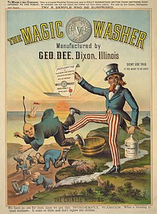
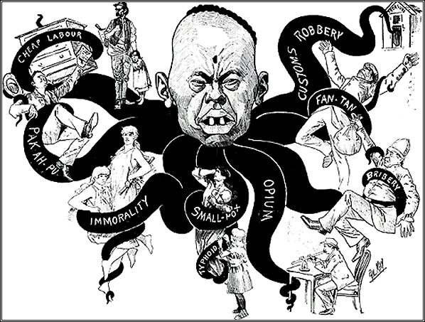

A Dive into the History Behind Asian American Families in the 19th and 20th Centuries
Beginning in the 19th and continuing into the 20th century, Asian immigrants faced considerable anti-Asian sentiment, much of which hindered their ability to form families. In the mid-1800s, during the time where Chinese men immigrated to America for work, anti-Asian sentiment grew. In arguments for the prohibition of Asian immigrants, stereotypes and misbeliefs were spread, such as the hypersexualization of Chinese women as prostitutes, belief that the Chinese were stealing jobs from Americans, and that Chinese immigrants were dirty and carried dangerous foreign diseases, all things that challenged white US society. As a result, multiple laws were enacted that prevented further Chinese immigration. For instance, the Page Act of 1875 banned the entrance of Chinese women into America (thus preventing the reunification of wives and husbands in America), and the 1882 Chinese Exclusion Act (that was only repealed during World War II) banned Chinese men as well. In general, these restrictive laws resulted in a Chinese American society with very few women, turning it into what is regarded as a “bachelor’s society.” In contrast to the experiences of Chinese immigrants, the 1907 Gentlemen's Agreement with Japan stopped the importation of Japanese laborers, but permitted the immigration of Japanese women / wives, and Japanese American families began to take shape.
In passing a law that set a quota on the amount of immigrants from the East, the Immigration Act of 1924 essentially banned all immigration from Asian countries in order to preserve US homogeneity. Some Asian men were able to work around it thanks to the War Brides Act, allowing members of the US armed forces to bring over their wives without any restrictions. Yet, anti-Asian sentiment remained, with the Immigration and Naturalization Service (INS) constructing rigorous and grueling interviews that tested their identities, and allowed them to deport them for anything suspicious. Later on, the Immigration Act was rectified by the Immigration Act of 1965 that brought about a wave of new immigrants that reunited many wives with their husbands, along with the ability to form families.
However, even without restrictions on the immigration of husbands, wives, or other family members, the formation of Asian American families still encountered difficulties. In some cases, the effects of the bachelor’s society lingered, with the husband being unable to return traditional family life. Marital problems arose, ranging from the cultural conflicts over choosing between traditionalism and Americanization to domestic violence issues. Traditionally, Asian families were constructed around a patriarchal hierarchy, with the eldest men holding most of the power as the main provider for the family. Yet, in America, women were commonly forced to take on jobs in order to make ends meet, which boosted their status in the family and helped them challenge the hierarchy of the family. Consequently, this contributed to the domestic violence, as the loss of status and power as the patriarch prompted men to lash out to help cope with their losing face. As you can see, Asian immigrants faced many political, social, and cultural challenges both internally and externally in their quest in establishing families in America.